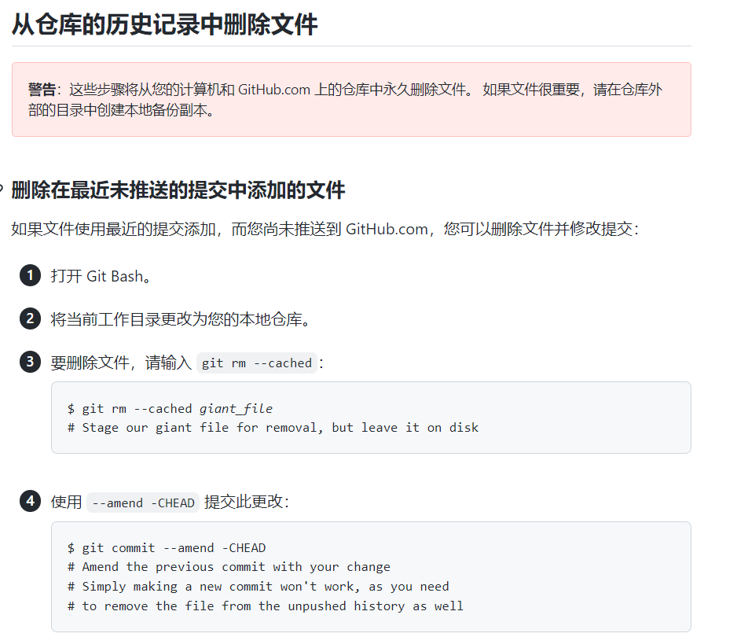

https://stackoverflow.com/questions/10340276/how-to-add-section-numbers-1-2-3-4-1-automatically-using-css
https://github.com/MaxLaumeister/PageCrypt
python.exe -m pip install --no-index --find-links=https://github.com/sfbahr/PyCrypto-Wheels/raw/master/pycrypto-2.6.1-cp35-none-win_amd64.whl pycrypto
